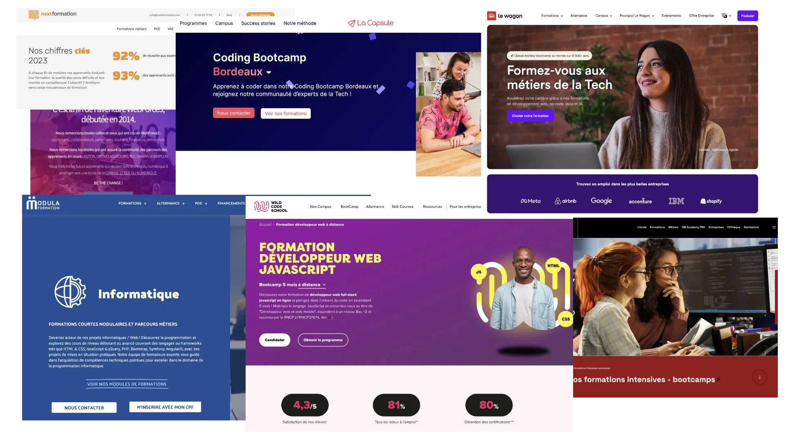
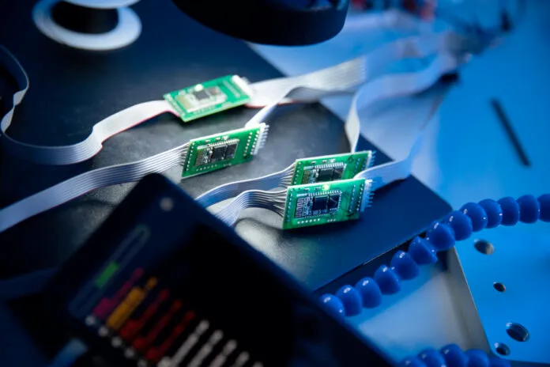

Avant toute chose, je tiens à préciser qu’il s’agit d’un point de vue complètement personnel. Cet article est issu d’un ensemble d’expériences rassemblées au cours de mes années de travail en tant que Directeur Technique et Tech Lead d’une petite entreprise bordelaise, mais aussi formateur et conférencier. Je me sers aussi de beaucoup de discussions partagées avec des confrères et consoeurs de postes différents : responsables de formation, formateurs et formatrices, tech leads, CTO, alternants et alternantes, intervenants, développeurs et développeuses, recruteurs et recruteuses.
Pour clarifier les choses, je suis autodidacte. J’ai ensuite enchaîné sur un BTS IRIS puis un Master Génie Logiciel à l’Université de Bordeaux. De fait, mon avis est forcément biaisé par mon cursus. J’essaierai au maximum de conserver un angle objectif en me basant sur les faits de mon expérience professionnelle mis en corrélation de la recherche et des faits existants, et je m’excuse par avance si l’objectivité de certains arguments laissent à désirer.
Enfin, mon expérience et ma vie étant liée à la ville de Bordeaux, je me prononcerai en priorité sur le contexte bordelais.
Les formations “courtes” représentent aujourd’hui une voie de formation principale dans le domaine de l’informatique (principalement le développement Web). Las des Universités, IUT, BTS et autres écoles d’ingénieurs, les nouveaux développeurs et les nouvelles développeuses se tournent vers de nouvelles formations plus courtes pour entrer dans le monde paradisiaque du développement Web. Mais est-ce que ces formations suffisent réellement à former des développeurs et des développeuses ? Spoiler : non.
Contextualisation des formations courtes
Pour comprendre comment la situation actuelle s’est créée, il faut d’abord comprendre l’histoire de la formation dans l’informatique et la mettre en corrélation avec l’histoire de l’informatique en tant que travail en France.
Le site du Zéro, temple disparu de l'initiation au développement
À une époque où la navigation “sur la toile” s’effectuait au moyen d’Internet Explorer (qui est maintenant définitivement mort, RIP), où les pages persos étaient là sans jamais devenir les blogs, où les rares webmestres devaient acheter des livres pour apprendre à coder, un certain M@teo21 décide de créer un site permettant à n’importe qui d’apprendre à coder facilement : le Site du Zéro. Ce drôle de site où des passionné•es écrivaient des cours de développement a été une initiation formidable au doux monde du développement, d’abord pour moi, mais aussi pour un nombre non négligeable de connaissances. Le site connut un large succès, et plusieurs années plus tard, il devînt un site dédié à la formation courte : OpenClassrooms.
Le modèle change, la rédaction se professionnalise, et l’État autorise alors OpenClassrooms à délivrer des diplômes en échange de formations payantes. En parallèle, une success story donnant des idées à d’autres, des nouvelles écoles s’ouvrent. On découvre alors, sur Bordeaux, des nouvelles écoles innovantes comme la Wild Code School (2013), le Wagon (2015), la Capsule (2016), la Piscine (2017), 3WRH (2018), ou encore Holberton School (2021) pour ne citer que les plus célèbres.
Le principe est toujours le même : effectuer une formation intensive pour entrer dans le monde de la tech, réputé pour son confort de travail et ses hauts salaires.
 Un extrait des "quelques" formations courtes en développement
Bien évidemment, les écoles de formation font face à une demande réelle : l’explosion de la demande dans la tech. Internet a vécu un essor formidable depuis ses débuts, voyant ses 16 millions d’utilisateurs en 1995 devenir 5 382 millions en 2022. Les usages se sont multipliés : les utilisateurs d’Internet discutent, découvrent et consomment, faisant d’Internet un marché pesant 4 900 milliards de dollars, et ce uniquement pour l’e-commerce. Les sites web sont devenus des applications performantes et riches en fonctionnalités, propulsées pour beaucoup par l’essor des start-ups en recherche d’un produit innovant à vendre. Les smartphones se sont démocratisés, si bien que, en 2021, 77% de la population âgée de 15 ans ou plus en était équipée, créant un marché de l’application mobile auparavant inexistant. Les appareils connectés ont atteint le doux nombre de 16,7 milliards d’objets actifs en 2023, et le récent essor de l’intelligence artificielle permet à n’importe quel personne dotée d’un clavier de remporter des concours d’art.
Devant la lenteur des formations “classiques” et la montagne d’offres d’emploi des domaines du développement, quelques entrepeneur•euses ont décidés de répondre plus rapidement à la forte demande en créant des formations plus courtes, plus intensives, mais aussi plus chères. Garantissant un emploi à la sortie, ces formations font de plus en plus d’adeptes, qu’il s’agisse d’étudiants post-bac ou de reconversions professionelles. Cependant, quels sont les arguments de ces formations pour pouvoir atteindre un résultat aussi rapidement et aussi bon (selon elles) ?
Philosophies et méthodes de la formation courte
L’innovation est le mot d’ordre de ces formations next-gen, dont le discours et les méthodes suivent non-exhaustivement ces préceptes :
1 - Les écoles traditionnelles françaises ne forment pas correctement
Quoi de mieux pour passer pour un type intelligent et malin que de dire que l’on disrupte le système éducatif français qui ne marche pas ? C’est notamment le discours qu’a tenu Xavier Niel lors de l’ouverture de 42 en 2013, et qui est repris par les nouvelles écoles pour crédibiliser leurs méthodes de formation.
Xavier Niel, pionnier de la décridibilisation des formations "classiques" en informatique Là où tout semblait formidable et cohérent en 2013, les fissures de ce modèle révolutionnaire commençait déjà à apparaître en 2018, rassemblant harcèlement et arnaques. En dehors des faits journalistiques, et de discussion en discussion avec d’autres professionel•les, les anciens élèves de 42 ont tendance à exacerber les défauts des anciens élèves d’écoles d’ingénieurs privées : peu de remise en question, difficile à gérer, peu de soft skills, ou encore une tendance à rendre le travail en équipe compliqué.
Dans le cas des formations courtes, cet argument sert beaucoup plus à défendre une vision différente de la formation visant à mettre en avant la pratique plus que la théorie. Dans le domaine, on appelle ça apprendre à pisser du code.
Si cela semble une bonne idée au premier abord, il faut d’abord revenir sur une conjecture primordiale : l’informatique est un domaine qui évolue très rapidement. Tellement rapidement que la pratique apprise en 2024 a une chance non négligeable de tomber en désuétude dés 2030. C’est notamment pour cette raison que beaucoup d’écoles traditionnelles continuent de former à la théorie et donc aux bases de l’informatique. Les personnes qui connaissent la théorie ont beaucoup plus de facilité de s’adapter à de nouvelles choses, et, mieux encore, peuvent utiliser les théories de base pour concevoir de nouvelles théories et de nouveaux outils, donc innover.

Pour illustrer ce principe, il suffit de se pencher sur l’innovation actuellement à la mode : l’intelligence artificielle. Derrière ce concept fourre-tout se cache l’utilisation des réseaux neuronaux qui permettent d’apprendre et de répéter des choses. Si l’essor de l’intelligence artificielle a été durant ces 5 dernières années, le concept des réseaux neuronaux a été détaillé initialement dans un papier scientifique de 1967 nommé Cybernetics and Forcasting Techniques - A. G. Ivakhnenko & Valentin Grigorʹevich Lapa. Sans connaître la théorie, il n’y aurait donc pas eu d’intelligence artificielle de la façon dont on la connaît aujourd’hui.
Dans un contexte technique plus avancé, les personnes qui connaissent les patrons de conception (par exemple, ceux du Gang of Four) sont plus propices à construire des solutions logicielles plus maintenables, comprendre plus facilement des technologies ou des langages qui reposent sur ces patrons ou même communiquer plus efficacement, étant donné qu’iels possèdent des éléments de langage basiques et communs au domaine. Par cette connaissance, ces développeurs et ces développeuses seront bien plus “productifs” que leurs équivalent•es formé•es uniquement à la pratique.
2 - Pas de professeurs : les étudiants sont des mentors
Le discours est simple : si on est capable d’enseigner, c’est que nous avons parfaitement compris la chose. C’est une philosophie que je partage complètement et que je pratique régulièrement sur différents sujets.
Néanmoins, là où les nouvelles écoles se targuent de cette philosophie comme solution miracle, il semble beaucoup plus pertinent d’y voir une optimisation des coûts plus qu’une idéologie : pourquoi payer des professeur•es alors qu’on pourrait se servir des élèves ? Cette méthode a et est toujours utilisée par l’école Epitech dans laquelle les étudiant•es d’années supérieures vont former les 1ère années, officiellement pour que les élèves évoluent plus vite et créer de la cohésion (un terme alternatif à celui de broculture), officieusement pour réduire les coûts de formation et augmenter au maximum le bénéfice au détriment de la qualité de formation.
Sur un autre plan, l’absence de professeur implique que, si les élèves-mentors sont incapables de répondre à une question, la réponse viendra très probablement d’Internet. D’expérience, les élèves ont souvent des questions pertinentes qui nécessitent un retour d’expérience : pourquoi utiliser telle technologie et pas celle-ci ? Comment fonctionne telle architecture et est-ce que c’est adapté à ce projet ? Est-ce qu’il y a des cas dans lesquelles telle solution n’est pas intéressante ? Toutes ces questions nécessitent un point de vue expérimenté, au-delà des 3/5 années d’études pour les formations sérieuses, donc encore plus loin pour les formations courtes.
Enfin, les enseignements de type mentorat / tutorat ont leurs avantages mais aussi leurs inconvénients : compétence du mentor (plus que questionnable ici), manque de formation et/ou de pédagogie du mentor, ou encore possibilité de détourner le mentorat à des fins personnels (exemple : une élève se retrouve en danger car un mentor fait du chantage à des fins immondes). Les avantages de cette méthode d’enseignement n’ont également pas été prouvés, comme le constate Roxane Bricet et Héloïse Lucas dans leur état des lieux sur le mentorat.
3 - Vous décrocherez un poste dans les meilleures entreprises tech
Toute personne initiée à la communication sait que la promesse de résultats est une technique efficace pour que les personnes passent à l’achat. Vous vous renseignez sur un régime ? Regardez les photos de ces personnes qui ont perdus 27 kg en 2 semaines. Vous souhaitez acheter une tondeuse à gazon ? Admirez ce magnifique jardin que vous aurez grâce à cet achat. Un sèche-cheveux ? Des cheveux dignes des plus grands coiffeurs et coiffeuses.
Publicité pour un sèche-cheveux Dyson De fait, la tech est un domaine qui attire : nous avons des salaires très élevés (3970€/mois en moyenne) , des conditions de travail formidables avec le travail distanciel ou même en devenant digital nomade, et, bien évidemment, nous vivons de notre passion. Et oublions les burnouts, épuisements mentaux et autres dépressions : comment travailler derrière son bureau toute la journée pourrait être un métier difficile ?
Du point de vue des entreprises, oui, il y a des postes à pourvoir. Cependant, le secteur de la tech recherche essentiellement des profils seniors aujourd’hui. On peut effectivement taxer les entreprises de ne pas vouloir former des juniors, mais le problème peut s’expliquer en 2 points :
- beaucoup de formations courtes existent aujourd’hui, donc beaucoup plus de profils juniors sont disponibles sur le marché. Il y a 4 ans, lorsque j’ai fait un recrutement d’un profil junior, j’ai eu la surprise de recevoir environ 50 CVs en 48 heures, alors même que nous étions une toute petite entreprise et peu connue. J’ai eu l’occasion de confirmer ce point avec des confrères et consoeurs qui ont également reçu beaucoup de CVs à la création d’un poste de junior. Par conjecture, le secteur de la tech semble aujourd’hui très bouché pour les profils “ultra-juniors” (c’est-à-dire avec moins de 3 ans de formation).
- les profils “ultra-juniors” sont formés en 6 mois, donc uniquement sur un langage et une techno spécifique, mais sans avoir de socle théorique nécessaire pour évoluer correctement dans le métier. On pourrait dire que ces personnes sont des ”profils jetables”, étant donné qu’à la moindre évolution, iels ne pourront se maintenir à niveau sans difficulté.
De plus, dans le cas où les entreprises recherchent des profils juniors, les élèves de formations courtes se retrouvent alors en concurrence avec les élèves de formations classiques (Bac +3 à +5) issues des IUTs, universités ou écoles d’ingés publiques et privées. Comment est-il possible de rivaliser avec des personnes qui ont eu 6 à 20 fois plus de temps pour se former ? Réponse : on ne peut pas.
4 - C’est un bootcamp / une formation intensive
Pour justifier des périodes 6 à 20 fois plus courtes que les formations classiques, il faut forcément trouver une méthode miracle. Celle-ci existe pourtant depuis des années dans les classes préparatoires françaises : le bourrage de crâne le rythme intensif de travail.
Un bootcamp sûrement intensif - Image de The Muse En recherchant des études pour déterminer l’efficacité d’une formation intensive par rapport à une formation classique, je suis tombé sur deux études :
- celle de John V. Kucsera et Dawn M. Zimmaro de 2010 sur un ensemble varié de formations,
- celle de Harwood, K.J., McDonald, P.L., Butler, J.T. et al. de 2018 sur des étudiant•es de la santé.
La conclusion des deux études est exactement la même : aucun résultat ne permet d’affirmer que les formations intensives sont moins efficaces que les formations classiques. De fait, une formation intensive est capable d’obtenir les mêmes résultats qu’une formation classique deux fois plus longue (cf. la 2ème étude).
Une question reste cependant sur la longueur condensable par une formation intensive, et, malgré tous les efforts du monde, je doute sur le fait qu’on peut condenser 2 ans de formation sur 6 mois. D’expérience, les élèves ont besoin de temps pour emmagasiner l’information sur le long terme et éviter les effets néfastes du bachotage (provoquant une rétention temporaire et réduite des informations).
5 - La formation ne vous coûtera rien
Effectivement, c’est une réalité : faire une formation courte ne coûte généralement pas d’argent personnel. Si les formations courtes se sont développées aussi vite que les punaises de lit à Paris, la raison est justement que les personnes qui créent ces formations connaissent toutes les aides et les méthodes d’obtention de celles-ci.
C’est assez simple : on construit des formations que l’on fait certifié par Qualiopi (surtout long administrativement), puis on devient éligible au CPF, aux contrats d’apprentissage et de professionnalisation (en fonction du plus rentable pour l’année en cours), à la Préparation Opérationnelle à l’Emploi, à l’Action de Formation Préalable au Recrutement et à l’Aide Individuelle à la formation. En parallèle, on peut deviner que ces entreprises sont subventionnées par les aides aux organismes de formations (par exemple), mais aucune information n’est disponible pour valider cette hypothèse.
Conséquences et problèmes de la formation courte
Exploitation des juniors
Nous avons déjà abordé l’une des conséquences principales de ces formations qui est la création d’un bouchon important sur le marché du développement avec une quantité trop importante de profils juniors.
Another brick in the Wall Part. 2 de Pink Floyd Les différentes ESNs (Entreprises de Services du Numérique) nationales sont pleinement au courant de cette information, et n’hésite pas à utiliser ce trop-plein de développeur•euses à leur avantage. Différentes discussions m’ont notamment appris qu’une entreprise commençant par C et finissant par i avait ouvert un plateau (appelé un “vivier de talents”) dont l’objectif est de se servir des profils “ultra-juniors” pour corriger tous les tickets mineurs de leurs projets, et envoyer les tickets à des équipes plus qualifiées si le ticket est trop complexe. Dans le cas où une personne n’est plus apte (burn-out, dépression, …), il suffit de la remplacer par un autre profil “ultra-junior”.
Beaucoup d’autres ESNs effectuent ce genre de pratiques de façon plus ou moins variée : un junior est placé comme seul développeur sur un projet avec, comme support, un tech lead disponible 10 minutes par jour, et bien évidemment vendu au tarif d’un senior. Puis, si jamais il lâche, il sera remplacé par un autre. On peut même faire des groupes de 2 à 3 juniors si jamais le client est un peu plus important !
En soit, il s’agit d’une variante bien connue dans les entreprises de l’utilisation des alternant•es et stagiaires comme travailleur•euses, sauf que cette nouvelle version est totalement légale.
Non-sélection des profils à l’entrée
Vu que l’on parle de formation courte et intensive, on pourrait penser que les écoles pratiquent une sélection pour homogénéiser le niveau de base des élèves. En discutant avec un ancien formateur, j’ai eu l’occasion d’apprendre que, lors de l’ouverture d’une école sur Bordeaux, il y avait effectivement des sélections, ce qui a disparu dés la seconde promotion. L’explication est bien évidemment que plus de personnes implique plus d’argent, mais ce n’est pas réellement là le problème.
Quand vous formez des personnes, plus un groupe est hétérogène, plus la formation sera compliquée. Par exemple, quand vous entrez en première année d’informatique en Université, il y a aujourd’hui un pourcentage important de personnes qui ont fait la spécialité NSI (Numérique et Sciences Informatiques) dans leur Bac. Cela signifie que, dans votre enseignement, vous pouvez partir du postulat que les étudiant•es connaissent le principe d’une boucle ou d’une condition et passer rapidement dessus. Dans le cas où aucune connaissance de départ ou d’affinité particulière n’est partagée, vous devez donc vous adaptez en permanence vos cours en partant du niveau le plus bas du groupe (donc rien) et réussir à vous adapter à des personnes extrêmement différentes par leurs compétences, leurs motivations et leurs présences.
Si ce n’est normalement pas un problème dans les formations traditionnelles, cela en devient un dés que la formation est censée être intensive, et donc que la formation doit être rapide et efficace, ce qui est incompatible, de mon point de vue, avec la présence d’absolument n’importe quel personne qui aurait juste payé la formation.
Chaos Theory de Shahid Zuberi (2023)
Sous-qualification des formations
Précédemment, nous avons vu que la formation intensive peut être aussi efficace qu’une formation plus longue. Cependant, nous restons sur des formations offrant des compétences de technicien•es / codeur•euses, malgré le fait que ces formations promettent des compétences de développeur•euse full-stack. Soyons francs : même un Bac+5 n’est pas un bon full-stack.
Il faut aussi considérer la période que nous vivons : l’essor des intelligences artificielles provoquent l’obligation d’une réflexion sur notre approche au travail (ce qui curieusement, ressemble à mon essai de 2019 sur la conception du travail). Les métiers nécessitant “moins de capacités intellectuelles et créatives” sont menacés comme l’ont été les métiers nécessitant “moins de capacités physiques” lors du début de l’essor de la robotique. Et parmi ces métiers, celui de codeur est ouvertement menacé. Pour illustrer ce propos, il suffit de voir ce post Reddit d’une personne qui a construit une application Web sans écrire la moindre ligne de code grâce à GPT4. On peut donc poser une question simple : à quoi va servir le métier de codeur ?
Sauf si vous allez être recruté•e pour faire de la TMA (Tierce Maintenance Applicative) sur des applications codées par des IAs ou sur des applications bancaires que personne ne veut maintenir (le temps que GPT apprenne le COBOL), vous n’aurez plus de travail. Le travail dans l’informatique sera de plus haut niveau : architecturer les applications et les infrastructures, vérifier la sécurité d’une application ou faire fonctionner des ordinateurs quantiques, bref, des choses qu’aucune formation courte n’enseigne aujourd’hui.
Comment se former au développement
Beaucoup de personnes posent régulièrement cette question, donc je vais essayer de détailler un peu les possibilités.
Vous êtes bachelier et vous voulez et pouvez faire des études plus longues
Visez au minimum un BUT (Bac +3). Cette formation assurée par les IUTs est accessible et professionnalisante, et vous disposerez d’un premier bagage solide de savoir. Il est à noter que le BUT est uniquement à visée professionnelle et ne permet pas de faire un master après (a contrario de l’ancienne Licence Pro qui pouvait amener parfois à un Master sur dossier).
Si vous souhaitez rentrer dans des domaines plus précis (cryptographie, traitement de l’image et du son, informatique fondamentale, IA, génie logiciel, etc.), faites une Licence puis un Master en Université ou en école d’ingénieur publique. Ces formations sont accessibles et vous permettront d’avoir beaucoup de connaissances avec des enseignants-chercheurs (pas forcément pédagogues par contre) pour ensuite évoluer en toute sérénité. C’est aussi le moyen d’entrée pour pouvoir faire un doctorat. Il est aussi possible de bifurquer vers un Master MIAGE (Informatique et Gestion) pour avoir une double compétence et un master en alternance (chose qui n’existe que très peu).
Si vous estimez que la théorie ne vous intéresse absolument pas, vous pouvez voir les écoles d’ingénieur privées (Epitech, SupInfo, Cesi, Ynov, etc.) qui coûtent au minimum 6 000 à 7000€ l’année. Il me semble que certaines écoles proposent des formations en alternance sur toutes les années pour le financement, mais, pour y avoir été intervenant, la qualité de l’enseignement n’est pas forcément à la hauteur de l’argent (une fabuleuse histoire de support de cours fourni par une école qui était complètement désuet).
Enfin, vous pouvez toujours vous laisser tenter par une formation courte, mais conservez un oeil critique envers ces formations. Avec certain•es de mes alternant•es, on a déjà eu des soucis de personnel qui change constamment, de cours qui sautent sans prévenir, bref, c’est loin d’être votre meilleure option.
Vous êtes en réorientation professionnel
Forcément, cela signifie que vous êtes déjà dans la vie active, donc que vous avez besoin de pognon pour vivre.
Vérifiez d’abord toutes les aides possibles (AIF, POE, AFPR, …). N’hésitez pas à consulter un•e conseiller•e Pôle Emploi France Travail, iels ont potentiellement des pistes en plus dont j’ignore l’existence.
Ensuite, en fonction de vos revenus, votre compte en banque et des aides possibles :
- si vous avez assez d’argent, un BUT dans un IUT est très intéressant.
- sinon, regardez les formations avec de l’alternance (donc l’entreprise paiera votre formation). Généralement, ça va être des formations courtes privées, mais vérifier malgré tout dans les IUTs, universités et écoles d’ingénieur s’il y a des choses qui peuvent se faire en alternance. Et, au cas-où, vous pouvez consulter la grille de rémunération minimale des apprentis ici.
Une troisième solution existe : être autodidacte. L’informatique est un domaine pour lequel une énorme quantité d’informations est disponible sur Internet. C’est un chemin plus ardu, mais vous êtes complètement autonome, vous pouvez progressez à votre rythme, avec vos projets, et continuer en attendant à vivre avec votre travail rémunéré.
Même si vous n’avez pas de diplôme, si vous êtes devenu quelqu’un de compétent, vous pouvez réussir à obtenir des entretiens via les différents événements liés à la tech (je pense notamment à toutes les sauteries les rencontres de la French Tech par exemple). Par contre, c’est très vivement conseillé de savoir ou d’apprendre à parler anglais.
26/02/24 - Mise à jour concernant l’autodidaxie : un commentaire sur LinkedIn de la part de Radu Mihnea Ciobanu mentionne l’open-source en tant qu’approche autodidacte, et c’est effectivement une approche extrêmement intéressant.
Pour faire simple, le principe de l’open-source est de créer des projets et publier le code sur des serveurs de versionnage (git pour le plus utilisé aujourd’hui). D’autres personnes peuvent alors participer à ce projet en modifiant le code pour répondre à des besoins ou corriger des bugs. Cela peut aussi être pour rajouter de la documentation, des tests, de la traduction, etc.
Cela nécessite de connaître un minimum le domaine, mais participer à l’open-source permet de découvrir des techniques de développement, des conventions de code, des domaines de travail, bref, plein de choses qui alimenteront votre culture du développement, tout en aidant des projets à se développer.
Si vous êtes intéressé•e, je vous invite à lire cette page de documentation de Github qui va vous permettre de débuter dans le monde fabuleux de l’open-source.
Un grand merci de votre lecture. J’espère que je vous aurais au moins permis d’y voir un peu plus clair dans cette jungle de l’enseignement en informatique.
Je tiens à remercier mes relecteur•trices Jean B. et Matthieu G., qui m’ont permis de mieux formater mes idées et vérifier le niveau de bêtises que je raconte dans cet article.
Vous pouvez me retrouver sur très peu de réseaux sociaux pour plus de takes désastreuses et de mésaventures, disponibles juste en-dessous. Et, bien évidemment, le GIF de fin :
 Michael Scott vous remercie de votre lecture
Michael Scott vous remercie de votre lecture